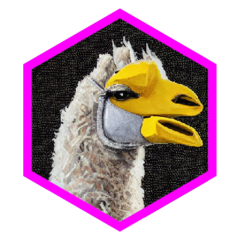

Create
Create httr2 request for both generate and chat endpoints
ql_request.RdCreate httr2 request for both generate and chat endpoints
Arguments
- endpoint
Defaults to "generate". Must be either "generate" or "chat".
- host
The address where the Ollama API can be reached, e.g.
http://localhost:11434for locally deployed Ollama.- timeout
If not set with
ql_set_options(), defaults to 300 seconds (5 minutes).
Examples
ql_prompt(prompt = "a haiku")
#> # A tibble: 1 × 7
#> prompt system seed temperature model format hash
#> <chr> <chr> <dbl> <dbl> <chr> <chr> <chr>
#> 1 a haiku You are a helpful assistant. 0 0 llama3.2 "" e64e99…
ql_prompt(prompt = "a haiku") |>
ql_request() |>
httr2::req_dry_run()
#> POST /api/generate HTTP/1.1
#> accept: */*
#> accept-encoding: deflate, gzip, br, zstd
#> content-length: 157
#> content-type: application/json
#> host: localhost:11434
#> user-agent: httr2/1.1.2 r-curl/6.2.2 libcurl/8.5.0
#>
#> {
#> "model": "llama3.2",
#> "prompt": "a haiku",
#> "images": null,
#> "stream": false,
#> "raw": false,
#> "options": {
#> "seed": 0,
#> "temperature": 0
#> },
#> "system": "You are a helpful assistant."
#> }